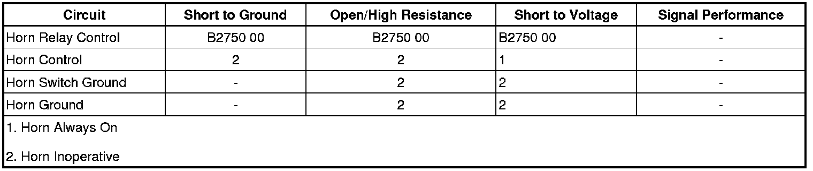

Horns Malfunction
Horns Malfunction
Diagnostic Instructions
* Perform the Diagnostic System Check - Vehicle (Initial Inspection and Diagnostic Overview) prior to using this diagnostic procedure.
* Review Strategy Based Diagnosis (Initial Inspection and Diagnostic Overview) for an overview of the diagnostic approach.
* Diagnostic Procedure Instructions (Initial Inspection and Diagnostic Overview) provides an overview of each diagnostic category.
Diagnostic Fault Information

Circuit/System Description
Battery positive voltage is applied at all times to the horn relay coil and the horn relay switch. Pressing the horn switch applies ground through the switch contacts and the horn relay control circuit to the coil side of the relay, energizing the relay. Battery voltage is then applied through the switch side of the relay, the horn fuse, and the horn control circuit to the horns. The body control module (BCM) may also apply ground to the horn relay control circuit as described above. The horns sound as long as ground is applied to the horn relay control circuit.
Diagnostic Aids
If diagnosing a Horn - Poor Tone condition, inspect the following:
* Debris or water in the horn assembly
* Proper horn mounting hardware torque-Refer to Fastener Tightening Specifications ([1][2]Horn) .
* Debris in the joint where the horns attach to the vehicle
Reference Information
Schematic Reference
Horn Schematics ([1][2]Electrical Diagrams)
Connector End View Reference
Component Connector End Views (Connector Views)
Description and Operation
Horns System Description and Operation (Description and Operation)
Electrical Information Reference
* Circuit Testing (Component Tests and General Diagnostics)
* Connector Repairs (Component Tests and General Diagnostics)
* Testing for Intermittent Conditions and Poor Connections (Component Tests and General Diagnostics)
* Wiring Repairs (Component Tests and General Diagnostics)
Scan Tool Reference
Control Module References (Programming and Relearning) for Scan Tool Information
Circuit/System Verification
1. Ignition ON, press and release the steering wheel horn pad. The horns should sound and emit a clear and even tone only when the horn pad is pressed.
• If the horns do not sound when the horn pad is pressed or continues sounding after the horn pad is released, refer to Horn Switch Circuit Test.
• If the sound emitted from the horns are not clear and even, refer to Horn - Poor Tone.
2. Command the horns ON and OFF with the scan tool. The horns should turn ON and OFF when changing between the commanded states.
• If the horns do not turn ON and OFF when changing between the commanded states, refer to Horn Circuit Test.
Circuit/System Testing
Horn Switch Circuit Test
1. Ignition OFF, disconnect the HORN relay.
2. Ignition ON, verify that a test lamp does not illuminate between the output circuit terminal R14 and ground.
• If the test lamp illuminates, test the output circuit for a short to voltage.
3. Verify that a test lamp illuminates between the B+ circuit terminal R16 and ground.
• If the test lamp does not illuminate, test the B+ circuit for a short to ground or an open/high resistance. If the circuit tests normal and the B+ circuit fuse is open, test the output circuit for a short to ground. If the circuit tests normal, test or replace the horn relay.
4. Verify that a test lamp illuminates between the B+ circuit terminal R15 and ground.
• If the test lamp does not illuminate, test the B+ circuit for an open/high resistance.
5. Ignition OFF, disconnect the harness connector at the horn assembly.
• If the test lamp illuminates, test the output circuit for a short to voltage.
6. Test for less than 1.0 ohm between the horn ground circuit terminal A and ground.
• If greater than the specified range, test the ground circuit for an open/high resistance.
7. Connect the harness connector at the horn assembly.
8. Ignition ON, connect a 15A fused jumper wire between the B+ circuit terminal R15 and the output circuit terminal R14. Verify the horns are activated.
• If the horn does not activate, test the output circuit for an open/high resistance. If the circuit tests normal, test or replace the horn assembly.
9. Connect a test lamp between the B+ circuit terminal R16 and the control circuit terminal R13.
10. Press and release the steering wheel horn pad. The test lamp should turn ON and OFF when changing between the commanded states.
• If the test lamp is always ON, test the control circuit for a short to ground. If the circuit tests normal, inspect for a sticking horn switch.
• If the test lamp is always OFF, test the control circuit for a short to voltage or an open/high resistance. If the circuit tests normal, inspect for an open horn switch.
11. If all circuits test normal, test or replace the HORN relay.
Horn Circuit Test
1. Ignition OFF, disconnect the horn relay.
2. Connect a test lamp between the B+ circuit terminal R16 and the control circuit terminal R13.
3. Ignition ON, command the horn ON and OFF with a scan tool. The test lamp should turn ON and OFF when changing between the commanded states.
• If the test lamp is always ON, test the control circuit for a short to ground. If the circuit tests normal, replace the BCM.
• If the test lamp is always OFF, test circuit the control circuit for a short to voltage or an open/high resistance. If the circuit tests normal, replace the BCM.
Horn - Poor Tone
1. Ignition OFF, disconnect the harness connector at the horn assembly.
2. Test for less than 1.0 ohm between the horn ground circuit terminal A and ground.
• If greater than the specified range, test the ground circuit for a high resistance.
3. Disconnect the harness connector X1 at the underhood fuse block.
4. Test for less than 1.0 ohm between the control circuit terminal 20 at the underhood fuse block and the control circuit terminal B at the horn assembly.
• If greater than the specified range, test the control circuit for a high resistance.
5. If all circuits test normal, test or replace the horn assembly.
Component Testing
Horn Test
1. Ignition OFF, disconnect the harness connector at the horn assembly.
2. Install a 15A fused jumper wire between the control circuit terminal B and 12 volts. Install a jumper wire between the ground circuit terminal A and ground. Verify the horn emits a clear and even tone.
• If the sound emitted is not clear and even, replace the horn assembly.
Relay Test
1. Ignition OFF, disconnect the horn relay.
2. Test for 60-180 ohms between terminals 85 and 86.
• If the resistance is not within the specified range, replace the relay.
3. Test for infinite resistance between the following terminals:
* 30 and 86
* 30 and 87
* 30 and 85
* 85 and 87
• If not the specified value, replace the relay.
4. Install a 30-amp fused jumper wire between relay terminal 85 and 12 volts. Install a jumper wire between relay terminal 86 and ground. Test for less than 2 ohms between terminals 30 and 87.
• If greater than the specified range, replace the relay.
Repair Instructions
Perform the Diagnostic Repair Verification (Verification Tests) after completing the diagnostic procedure.
* Relay Replacement (Attached to Wire Harness) (Relay Replacement (Attached to Wire Harness))Relay Replacement (Within an Electrical Center) (Relay Replacement (Within an Electrical Center))
* Horn Replacement (Service and Repair)
* Inflatable Restraint Steering Wheel Module Replacement (Service and Repair)
* Control Module References (Programming and Relearning) for BCM replacement, setup, and programming